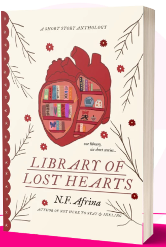
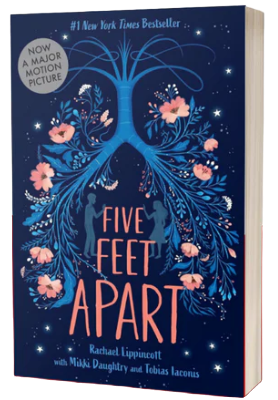
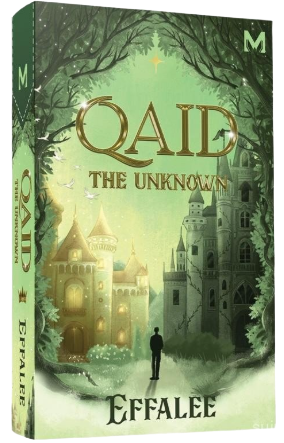
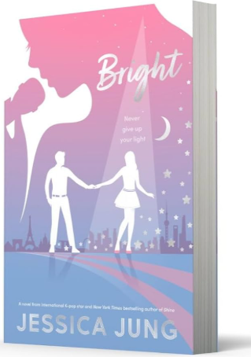
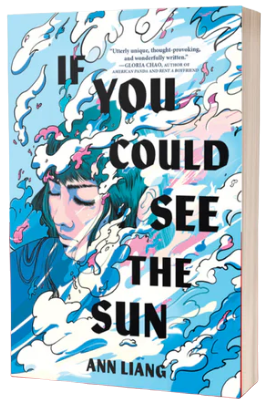

Welcome to my reading corner — a space to share the stories I’m diving into now and the ones waiting on my future list
When I was a child, my parents bought me my first novel. They wanted my siblings and me to read more, so they often gave us storybooks and comics, and sometimes even brought us to book events like Big Bad Wolf. Since then, I’ve grown deeply interested in reading, and now it has become my most cherished hobby.
The very first book I read was Siri Ana Solehah by Ana Muslim.
I love immersing myself in stories, imagining that I am part of them as I read. Stories make me feel emotions I can relate to, and they express thoughts I sometimes struggle to put into words. Reading allows me to explore different worlds and perspectives. I am especially fond of fiction novels, as they expand my imagination endlessly.
Veil of Shadows introduced me to magical realism and Cdrama worlds.
Currently
|
Title : Lyrics & You By NurulJannah Usop Language : English Genres : Love, Young Adult, Rom Com, Romance Year : 2024 Short Summary : Nur Edlynn, a plus-sized girl, has been secretly in love with her best friend Tengku Aqeel for years, but a youthful confession letter leads to heartbreak, and their friendship is strained for five years Progress : 80% |
Future Reads |
Title : Library Of Lost Hearts by N.F. Afrina Language : English Genres : Fiction, Romance, Anthologies, Short Stories Year : 2024 Short Summary : Library of Lost Hearts is a collection of short stories framed within an overarching narrative about a mystical moving library that tours small towns near Mount Impossible, favoring Purnama Hollow.The book mixes magical realism with emotional storytelling, exploring themes of storytelling, self-acceptance, and human connection |

Title: Five Feet Apart
Author: Rachael Lippincott, with contributors Mikki Daughtry and Tobias Iaconis
Publisher: Simon & Schuster Books
Language: English
Genres: Romance, Young Adult, Contemporary, Fiction, Realistic Fiction
Year: 2018
Summary: a young adult novel about two teenagers with cystic fibrosis who navigate love and personal connection while adhering to strict health precautions
Rating: 5/5

Title: Qaid The Uknown
Author: Effalee
Publisher: Manes WordWorks
Language: Malay & English
Genres: Romance, Young Adult, Contemporary, Fiction, Realistic Fiction
Year: 2025
Summary: A Malaysian thriller-mystery novel by Effalee that follows the tense and complex relationship between Amra and her formidable adversary Damien Qaid as they unravel a series of mysterious murders
Rating: 5/5

Title: Bright
Author : Jessica Jung
Language: English
Genres: Romance, Young Adult, Fiction, Music
Year: 2022
Rating: 4/5

Title: Harry Potter
Language: English
Genres: Fantasy, Adventure
Year: 1997
Summary: The magical journey of a young wizard discovering friendship, courage, and destiny.
Rating: 4/5